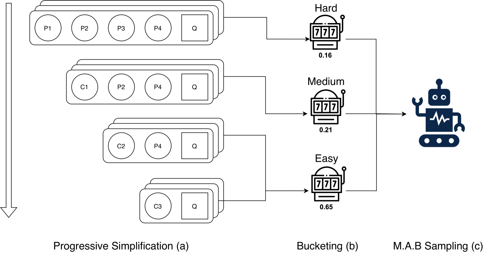
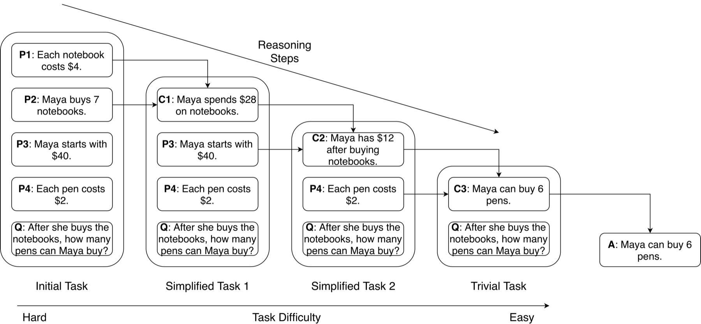
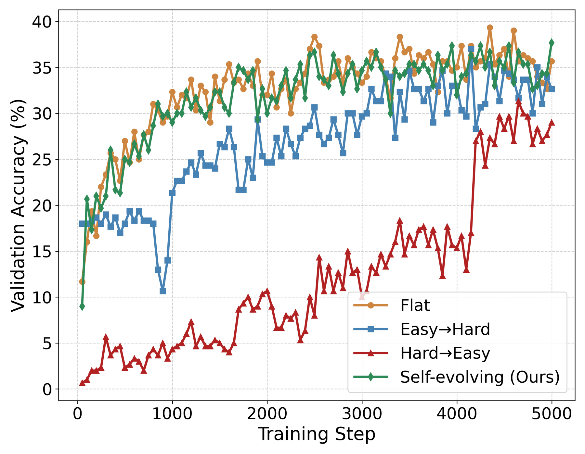
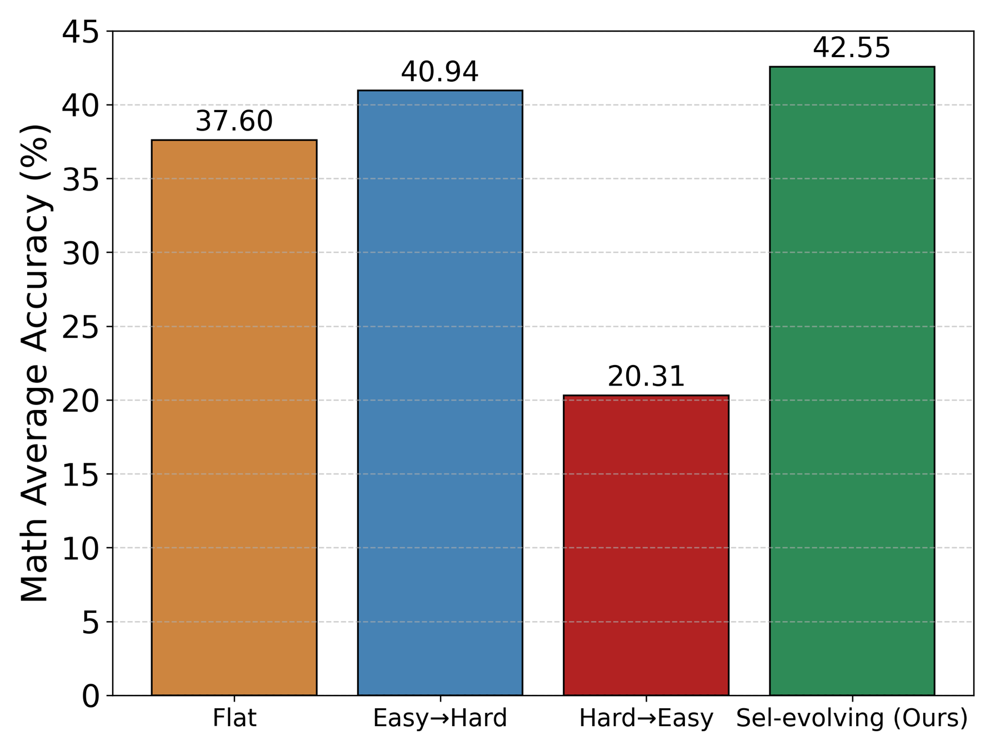

TL;DR
LoT turns each reasoning problem into a ladder of faithful, progressively easier variants—then uses a bandit scheduler to adapt the training mix as the student learns.
with OPT-2.7B
with OPT-1.3B
across four model families
from the adaptive scheduler
The challenge
Small models need a gentler climb.
Knowledge distillation gives smaller language models expert traces, but not always the learning path needed to absorb them. The gap between teacher and student can leave brittle shortcuts instead of transferable reasoning.

Figure 1
LoT rewrites a problem into successively easier forms, groups examples by minimal reasoning depth, and lets an adaptive scheduler choose the most useful level throughout training.
Progressive rewrites
Replace premises used in one reasoning step with their logically entailed conclusion. Each rewrite preserves the task and answer while reducing the remaining inferential depth.
Step-based difficulty
Estimate difficulty with the minimal number of reasoning steps—not surface length—then organize examples into easy, medium, and hard buckets.
Self-evolving curriculum
Treat each bucket as a bandit arm. Validation gains become rewards, shifting the training distribution toward the levels producing the most learning progress.
Progressive simplification
The same problem, one step closer.
LoT does not decompose a task into unrelated subproblems. It progressively replaces already-resolved premises with intermediate conclusions, keeping the original problem identity intact.
- ✓ Semantically faithful rewrites
- ✓ No answer leakage
- ✓ Interpretable, monotonic difficulty

Results
Better transfer, not just better memorization.
Across math and multi-hop reasoning, the largest gains appear on out-of-distribution tasks that depend on compositional inference.
AddSub pass@5 for OPT-2.7B: a 32.11-point gain over standard CoT distillation.
StrategyQA pass@5 for OPT-1.3B: a 25.2-point gain over standard CoT distillation.
AddSub pass@5 for Llama 3.1–8B: the gains persist as student scale increases.


Experimental scope
Two domains.
Ten benchmarks.
Math reasoning
Train on GSM8K; evaluate on GSM8K, AddSub, ASDiv, MultiArith, and SVAMP.
Multi-hop reasoning
Train on EntailmentBank; evaluate on EntailmentBank, QASC, OpenBookQA, StrategyQA, and MuSiQue.
Citation
Build on Ladders of Thought.
@misc{liu2026laddersthought,
title = {Ladders of Thought: A Self-Evolving Curriculum of Progressively Simplified Reasoning Traces},
author = {Minghui Liu and Thomas Magelinski and Dehao Yuan and Qi Yu and Furong Huang},
year = {2026},
eprint = {2609.25643},
archivePrefix = {arXiv},
primaryClass = {cs.AI},
url = {https://arxiv.org/abs/2609.25643}
}